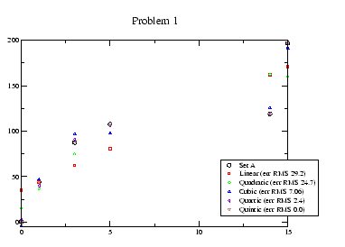
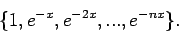

The following problems require you to compute least squares fits and linear interpolants. Many software packages will perform basic operations for you. Maple and Matlab are examples, but even simple plotting packages often have ``linear regression'' subroutines that will find the best fit for you.
|
 |
The solutions are shown in Figure 1. Notice that the cubic, quartic and quintic polynomials all perform reasonably well. The quadratic and linear look noticeably bad, and there is a rapid plunge in the RMS errors when going from quadratic to cubic. Of course, if f(x) were cubic, the quartic and quintic fits would look good too. Thus, one suspects that the f(x) might be cubic and that subsequent improvement might be because one is fitting the curve to the noise. These are the hazards of having a small sample. Investigators who fall into this trap tend to find that they can always fit their model to the data.
In Figure 2, we see that they are not very close though several students noticed that the max's and min's occur at similar points. Thus, we see the interpolation can be rather erratic, especially with a paucity of data. Notice too that the ``bad'' behavior occurs where the gaps in the data is greatest.
In Figure 3, we see that we have a large sample. When examining the RMS errors, we find that there is a drop between quadratic and cubic. The steady RMS errors beyond this point can be attributed to the noise. If we use very high order polynomials so that the number of coefficients was close to the sample size, we would find that we would start fitting the curve to the noise again.
The information from questions #1 and 3 all point to cubic form. I wrote the problem, so my opinion is irrelevant.
em Yes, they do represent the same phenomenon. If you translate the second curve by plotting f(x+x0) and choose x0 properly, the almost lie on top of one another. Many students noticed this and speculated that the environmental firm has not allowed enough time for excess CO2 to dissipate from the first test. I share this view.
This question is a bit of a red herring because it asks you to speculate on an extrapolation. Without any knowledge of the underlying physics, it is hard to say anything about what will happen in the future. The curve might level off for a while and then shoot up. (This is what happens with white cell counts in AIDS/HIV patients for example.)
Many students attempted to fit polynomials to the data, and correctly
observed that the polynomials would not be useful for extrapolation.
Remember that using best fits does not necessarily mean that
polynomials should be used. The family of functions used will heavily
influence what you see. Polynomials all blow up for large time, so
this is what you will see if you try to fit a polynomial to this
data. No one attempted to fit nonpolynomial curves. For instance,
one could use a family like

Clearly, the firm has some field experience doing these measurements, but by the same token, they represent the defendant so there is no incentive for them to make more measurements.
In addition, I ask you the following question: Assuming the employer repaired the furnace after the tests so that no further measurements were possible, what additional information would you want or need to have to confidently answer the questions above?
The whole point behind modeling is to gain some understanding of the problem and quantify it. In this case, one would learn something about diffusion in a duct and perhaps furnaces and see if one could build a general solution. Then, one would try to determine any unknown coefficients by fitting this solution to the known data.